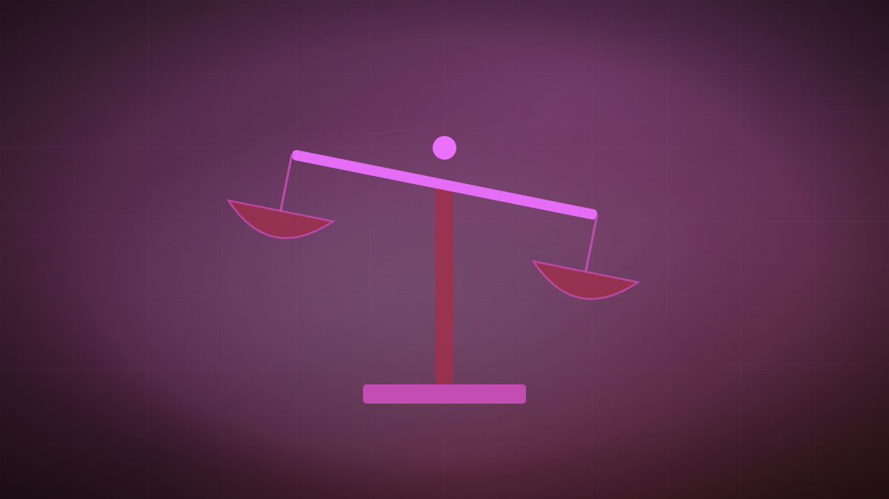

Bill Gates says AI has crossed every danger threshold the industry once named as a limit
Three years after calling AI-driven job disruption "manageable," Gates now argues the economy, biosecurity and criminal misuse thresholds have all been passed.

Original cover art, generated for this story. THE VISSION does not republish third-party press imagery.
- Gates told MIT Technology Review: "We've crossed the threshold in terms of [AI's] bio-capabilities, cyber-capabilities, psychosocial capabilities, job-market-destruction capabilities, and even the lack of control."
- He estimates bioterrorism risk from AI-designed molecules at roughly 50 times more likely than a natural pandemic, and says any model able to design novel molecules should be monitored.
- He proposes a tax on AI usage revenue to fund a social safety net, a tax or restriction on robotic labour, and categories of work formally reserved for humans.
- The position is a reversal: three years ago Gates described coming AI-driven job disruption as a manageable transition; he now expects "far fewer" jobs than exist today.
Bill Gates has reversed a position he held publicly as recently as three years ago, when he described AI-driven labour disruption as a manageable transition. In an interview with MIT Technology Review, Gates said the industry has now crossed every threshold it once treated as a hypothetical limit: "We've crossed the threshold in terms of [AI's] bio-capabilities, cyber-capabilities, psychosocial capabilities, job-market-destruction capabilities, and even the lack of control." He added: "I'm just stunned at the lack of concern and discussion outside of the industry."
His most specific claim concerns biosecurity. Gates argues that any AI model capable of designing novel molecules should be subject to monitoring, and puts the risk of AI-enabled bioterrorism at roughly 50 times more likely than a naturally occurring pandemic. He also says AI has lowered the skill floor for cyberattacks to the point that people with no technical background can now conduct them.
On jobs, Gates told Fortune separately that both white-collar work — customer support, software engineering, paralegal tasks — and blue-collar work in construction and hospitality face displacement by the end of the decade, and that AI companionship products risk stunting child development: "I doubt I would have put in the same work if I had had an AI companion back then. They talk to you in ways you're already comfortable with."
His proposed responses are policy, not product features: a tax on AI usage revenue to fund social-safety-net spending, taxation or restriction of robotic labour, a set of jobs formally reserved for human workers by social agreement, and international coordination — explicitly including China — on monitoring models capable of designing novel molecules. Gates frames this as requiring government expertise rather than industry self-regulation.
Gates is not a safety researcher with an incentive to sound alarms; he is a former industry CEO whose prior public position was reassurance, and the reversal is the news as much as the content of the warning. His specific proposals — a usage tax, human-reserved job categories — are the kind of policy a legislature could actually draft, which moves this from ambient concern to something builders and investors should treat as a live regulatory scenario rather than background noise.